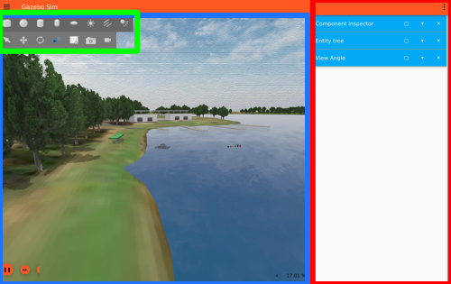

gazebo
gazebo is a simulation program we use to test our boat! instead of taking out our boat every time we need to test code, we simply run gazebo! * at the time of writing (2024), we are using Gazebo Garden. this should come preinstalled with the docker installation
how to use gazebo
launch gazebo using the command below:
ros2 launch vrx_gz competition.launch.py world:=sydney_regatta
once you open up gazebo, you'll probably be greeting with a frozen screen. don't worry, this is normal. give it a minute of two :]
navigating gazebo

toolbar
main view
panels
- click the 3 buttons on the top right corner
- type out the panel you want to add
- profit?